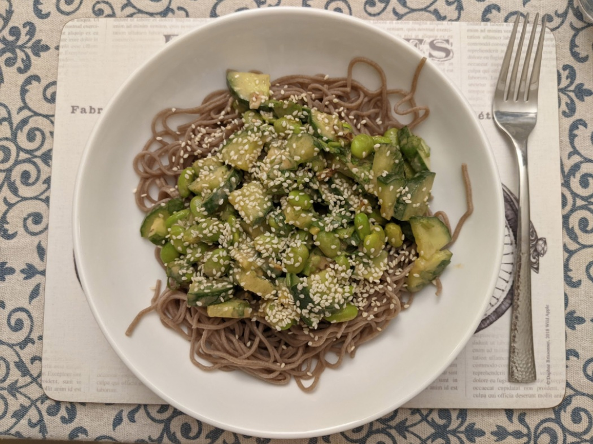

Peanut soba noodles
Mmmmm...

Ingredients
Main dish
- 270g soba noodles
- 1 cucumber, sliced
- 2 green onions, thinly sliced
- ⅔ cup chopped coriander
- ⅔ cup shelled edamame beans
- Sesame seeds, for sprinkling
Sauce
- ¼ cup natural peanut butter
- ¼ cup freshly-squeezed lime juice (we use lemon)
- 2 Tbsp soy sauce
- 2 Tbsp rice vinegar
- 1 Tbsp honey/maple syrup
- 1 Tbsp toasted sesame oil
- ½ tsp ground ginger
Instructions
- Prepare fresh ingredients and mix.
- Prepare sauce (remember to heat peanut butter before adding other ingredients).
- Cook noodles according to packet instructions, then rinse with cold water.
- Add noodles and sauce to fresh ingredients and mix.
- Serve and sprinkle with sesame seeds.
Serves 4.
Inspired by this
recipe.